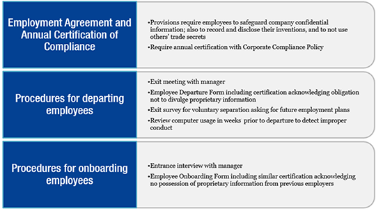
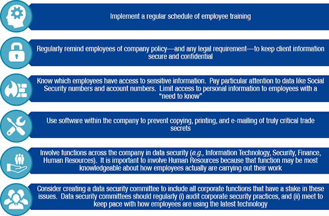

In 2011, the Federal Circuit in TianRui Grp. Co. v. Int’l Trade Comm’n affirmed the International Trade Commission’s (ITC) authority to look to extraterritorial conduct of a respondent to determine whether that respondent misappropriated trade secrets under 19 U.S.C.A. § 1337 (“Section 337”). In 2016, the Defend Trade Secrets Act (DTSA), which created a federal cause of action for trade secret misappropriation, was enacted. The law is clear that the ITC can find a violation of Section 337 based on misappropriation of trade secrets conducted abroad. The DTSA adds yet another avenue to assert such claims at the ITC.
This paper explores recent trends in trade secret misappropriation in the ITC and recommends best practices. Based on a survey of 16 recent ITC investigations with trade secret claims, a few trends appear. First, the ITC has consistently considered extraterritorial conduct as evidence of trade secret misappropriation under Section 337. Second, there is a growing acceptance of the DTSA as a basis for trade secret misappropriation claims in the ITC. Third, at least one Administrative Law Judge (ALJ) has interpreted TianRui to require rejecting comity arguments in motions to terminate. This gradual expansion of the ITC’s jurisdiction, coupled with a general increase in trade secret investigations in the ITC, indicates that companies should be prepared to bring or respond to trade secret misappropriation claims in this forum.
The ITC is a federal agency that is empowered, under Section 337 of the Tariff Act of 1930, to determine, inter alia, whether there exists “[u]nfair methods of competition and unfair acts in the importation of articles . . . into the United States, or in the sale of such articles by the owner, importer, or consignee, the threat or effect of which is—
(i) to destroy or substantially injure an industry in the United States;
(ii) to prevent the establishment of such an industry; or
(iii) to restrain or monopolize trade and commerce in the United States.”
19 U.S.C.A. § 1337 (a)(1)(A). Trade secret misappropriation falls under this mandate.[1] Upon determination of a Section 337 violation, the ITC “shall direct that the articles concerned, imported by any person violating the provision of this section, be excluded from entry into the United States.”[2] The most common remedy is a Limited Exclusion Order (LEO), which prohibits named respondents in an ITC investigation from importing offending articles into the United States. Rarely, the ITC also issues General Exclusion Orders (GEOs), which prohibit any party from importing offending articles. Partly because of such effective remedies, the ITC has become a popular venue for companies who seek to protect their market share in the United States.
Despite Section 337’s focus on foreign articles being imported into the United States, it has been unclear until recently whether foreign conduct qualifies as evidence of an unfair method or an unfair act. The Federal Circuit answered this question in the affirmative in TianRui Grp. Co. v. Int’l Trade Comm’n, 661 F.3d 1322, 1326 (Fed. Cir. 2011). In 2008, ITC ALJ Charneski issued an Initial Determination that certain TianRui respondents[3] misappropriated Complainant Amsted’s trade secrets relating to the manufacture of railway wheels.[4] The ALJ based this determination on TianRui’s conduct in China.[5] The TianRui respondents appealed to the Federal Circuit, arguing inter alia that the ITC could not look to extraterritorial conduct in determining violations of Section 337. A divided Federal Circuit rejected this argument, holding that Section 337’s prohibition on unfair methods of competition and unfair acts in the importation of articles into the United States “include[s] conduct that takes place abroad.”[6]
Because Amsted’s trade secret misappropriation claim was founded on Illinois trade secret law, Amsted argued that the ITC could apply state law in determining trade secret misappropriation.[7] The Federal Circuit disagreed, holding instead that “a single federal standard, rather than the law of a particular state, should determine what constitutes a misappropriation of trade secrets sufficient to establish an ‘unfair method of competition’ under section 337.”[8] At the time TianRui was decided, no federal trade secret statute was in place. Yet the Federal Circuit declined to overturn the ITC’s application of Illinois trade secret law, because, “[f]ortunately, trade secret law varies little from state to state and is generally governed by widely recognized authorities such as the Restatement of Unfair Competition and the Uniform Trade Secrets Act.”[9]TianRui left open the question of how to apply trade secret law for states that have not adopted the Uniform Trade Secrets Act (UTSA).[10] Such concerns were resolved, however, with the passage of the federal DTSA in 2016.
The DTSA created a federal cause of action for the misappropriation of a trade secret.[11] The DTSA is, for the most part, modeled after the UTSA.[12] This provided the “single federal standard” that the Federal Circuit required of trade secret misappropriation claims brought before the ITC, tacitly strengthening the holding of TianRui. The ITC has become an even more attractive venue for litigants seeking injunction-equivalents against companies who misappropriate trade secrets overseas.
The ITC has been and remains a popular venue for patent issues. Trade secret misappropriation claims have historically been, and to a large extent remain, a minority cause of action at the ITC.[13] In 2013, Riley and Stroud noted that, since 1972, the ITC has instituted only 41 investigations involving trade secrets. Riley and Stroud noted that “[o]nly a handful did not settle before a hearing, even fewer made it to a final determination, and only a small subset of those substantially comment on the law of trade secret violations at the ITC.”[14] This averages to one investigation per year. In the decade following TianRui, the number of trade secret-related investigations at the ITC has increased by 80%.
|
Title (In the Matter of Certain): |
Inv. No. |
ALJ Assigned |
Date of Institution |
|
DC-DC Controllers and Products Containing the Same |
698 |
Paul Luckern |
01/05/2010* |
|
Electric Fireplaces, Components Thereof, Manuals for Same, Certain Processes for Manufacturing or Relating to Same and Certain Products Containing Same |
791/826 |
David Shaw |
07/20/2011*; 1/19/2012 |
|
Rubber Resins and Processes for Manufacturing Same |
849 |
Sandra Lord |
6/26/2012 |
|
Paper Shredders, Certain Processes for Manufacturing or Relating to Same and Certain Products Containing Same and Certain Parts Thereof |
863 |
Thomas Pender |
1/25/2013 |
|
Robotic Toys and Components Thereof |
869 |
Charles Bullock |
2/11/2013 |
|
Opaque Polymers |
883 |
Thomas Pender |
6/21/2013 |
|
Crawler Cranes and Components |
887 |
David Shaw |
7/17/2013 |
|
Stainless Steel Products, Certain Processes for Manufacturing or Relating to Same, and Certain Products Containing Same |
933 |
Theodore Essex |
10/10/2014 |
|
Activity Tracking Devices, Systems, and Components Thereof |
963 |
Sandra Lord |
8/21/2015 |
|
Carbon and Alloy Steel Products |
1002 |
Sandra Lord |
6/2/2016 |
|
Amorphous Metal and Products Containing Same |
1078 |
Thomas Pender |
10/30/2017 |
|
Botulinum Toxin Products, Processes for Manufacturing or Relating to Same and Certain Products Containing Same |
1145 |
David Shaw |
3/6/2019 |
|
Bone Cements and Components Thereof |
1153 |
Cameron Elliot |
4/10/2019 |
|
Lithium Ion Batteries, Battery Cells, Battery Modules, Battery Packs, Components Thereof, and Production and Testing Systems and Processes Therefor |
1159 |
Cameron Elliot |
6/4/2019 |
|
Foodservice Equipment and Components Thereof |
1166 |
Charles Bullock |
7/3/2019 |
|
Bone Cements and Bone Cement Accessories |
1175 |
Cameron Elliot |
9/23/2019 |
|
Balanced Armature Devices, Products Containing Same, and Components Thereof |
1186 |
Sandra Lord |
11/29/2019 |
|
Certain Digital Imaging Devices and Products Containing the Same and Components Thereof |
1231 |
Cameron Elliot |
12/01/2020 |
|
Certain Optical Enclosures, Components Thereof, and Products Containing the Same |
1274 |
David Shaw |
08/10/2021 |
|
Certain Adalimumab, Processes for Manufacturing or Relating to Same, and Products Containing Same |
1296 |
Monica Bhattacharyya |
01/31/2022 |
Table 1: Trade Secret Investigations at the ITC Since 2012[15]
Based on these recent trade secret-related investigations, a few trends are noteworthy:
But not all ALJs have interpreted TianRui as unilaterally expanding the ITC’s jurisdiction. For example, ALJ Lord, in considering antitrust claims, relied on TianRui in terminating an investigation because complainant failed to plead a claim on which relief can be granted.[27] ALJ Lord rejected complainant’s argument that an already instituted investigation cannot be terminated without “intervening events or information.”[28] ALJ Lord instead found that an investigation must be “resolved using the same substantive law that governs federal antitrust cases,” which requires pleading injury under federal antitrust law.[29] The Commission agreed, interpreting “‘[u]nfair methods of competition and unfair acts’ under section 337(a)(1)(A), when predicated on the Sherman Act, to require antitrust injury.”[30] ALJ Lord has applied the same reasoning to copyright[31] and tortious interference with contract[32] claims.
Post-TianRui, trade secret litigation in the ITC is on the rise. The introduction of a new federal trade secret “standard,” the DTSA, may lead to even more litigation. Bringing trade secret claims at the ITC instead of federal court comes with several benefits, including a speedy adjudication, the potential for an exclusion order enforced by U.S. Customs and Border Protection, and the ability to rely on foreign conduct to establish misappropriation.[33] Pending the outcome of Allergan v. ITC at the Federal Circuit, the ITC’s jurisdiction may even extend to foreign trade secrets.
Regardless of whether a trade secret case is on the horizon, it is prudent to properly protect a company’s trade secrets and avoid misusing the trade secrets of others. Proper documentation is key, especially given the speed of trade secret misappropriation investigations at the ITC.[34] Based on recent trends, the threat—and appeal—of litigating at the ITC are likely to grow.
|
Best Practice |
Summary |
|
Determine whether Trade Secret Protection is warranted |
Patent and copyright protection is incompatible with trade secret protection. Patents and copyright are public, whereas trade secrets remain private. |
|
Create robust employment protocols and agreements protecting trade secrets |
Implement a “clean entry, clean exit” strategy, and require annual certification of adherence to corporate compliance policies. |
|
Establish physical, virtual, and cultural safeguards |
Require badge access, implement up-to-date digital security protocols, and take care when permitting BYOD policies. |
|
Have in place and comply with proper non-disclosure agreements |
Ensure that access by partners, customers, and employees to confidential company information is covered by a non-disclosure agreement. Mark all confidential documents as such. Take care not to mishandle another company’s trade secrets. |
Table 2: Summary of General Practices
For any company, the first step is to determine whether confidential information should be kept as a trade secret. In several industries, it may make more business sense to file patents or copyrights, for example, to create a robust and attractive intellectual property portfolio. With few exceptions, the decision to file a patent or copyright is incompatible with maintaining a trade secret. As a rule of thumb, patent protection tends to be more offensive, whereas copyright and trade secret protection tend to be more defensive. Patents and copyrights can also generate licensing revenue. By contrast, trade secrets have no expiration date and are ideal to protect information from ever being public.
Second, companies should have robust employment protocols protecting the trade secrets. Critical here are robust employee agreements both during employment and after termination. Trade secret misappropriation is frequently traced back to employee misconduct, as recognized by the ITC in the earliest of trade secret investigations.[35] Accordingly, a “clean entry, clean exit” employment policy is recommended: ensure that no external trade secrets enter the company upon onboarding, and ensure that no internal trade secrets leave the company upon offboarding. Annual certification is also recommended.

Figure 1. Basic Employee Security Measures
Third, establish physical, virtual, and cultural safeguards around company intellectual property. Physical safeguards include requiring badge access to specific areas, particularly for visitors, contractors, and employees working on different projects. Virtual safeguards include implementation of two-factor authentication, data encryption, and frequent password cycles.
With the growing popularity of Bring Your Own Device (BYOD) policies, virtual safeguards are exceptionally important. Ensure that each personal device is compliant with the latest corporate security protocols and is subject to frequent re-certification. Having each BYOD employee register their device and sign a user agreement is also helpful. Companies should work to foster a culture of protecting company trade secrets.

Figure 2. Exemplary Cultural Safeguards
Lastly, ensure that proper non-disclosure agreements with partners, customers, and employees are in place. Every time confidential company information is made accessible, such information should be protected by a corresponding agreement. Equally important is to mark every document containing confidential information as confidential, proprietary, and/or trade secret. Doing so can make establishing the trade secret status of certain documents a formality. Conversely, ensure that the company’s own employees are properly handling trade secrets belonging to other companies.
|
Best Practice (Complainant) |
Summary |
|
Identify scope of trade secrets |
Start broad and go narrow. Be prepared to drop the number of asserted trade secrets to ten or less. |
|
Identify trade secret protection protocols and agreements |
Identify and seal any potential loopholes, such as gaps in non-disclosure agreements, omission in collecting all company property upon termination of employees, and failure to designate confidential and confidential-adjacent documents as trade secret. |
|
Identify all avenues of public dissemination of the asserted trade secrets |
Consider conferences, courses, blogs, social media, academic publications, press releases, patent applications, copyright applications, and discharged employees. Take down any unauthorized publications. |
|
Prepare a damages model |
Plan how to establish injury to a domestic industry; recall that the domestic industry need not itself practice the trade secret. |
|
File the Complaint |
Consider: (1) whether federal common law or the DTSA is a better basis for the complaint; (2) interactions between trade secret claims and other claims; and (3) alternative jurisdictions. |
Table 3: Summary of Best Practices for Complainants
Should a company determine that litigation is warranted, several steps should be taken prior to bringing suit. First, consider defining the scope of the company’s trade secrets. Complainants should think of defining their trade secrets broadly, with an eye toward narrowing the list during discovery. While certain states, such as California, require a particularized list prior to commencing discovery,[36] this is not currently a requirement for trade secret claims at the ITC. Instead, ALJs require an eventual narrowing of trade secrets prior to the close of discovery.[37] Accordingly, complainants should take advantage of the ITC’s less restrictive requirements to cast a wide net, with a goal of narrowing the trade secrets to around 10[38] by the time of trial. Such preparation will facilitate a rapid response to ALJ orders—a necessity in the fast-moving ITC.
Second, identify all protocols and agreements relating to trade secret protection. It is critical to know how your company keeps the company’s trade secrets safe, and, perhaps more importantly, identify any loopholes in such protections. Common loopholes include gaps in non-disclosure agreements, omission in collecting all company property upon termination of employees, and failure to designate confidential and confidential-adjacent documents as trade secret. To the extent possible, address any such loopholes prior to bringing suit, and consider updating protocols to cover the potential asserted trade secrets.
Third, identify all avenues of public dissemination of the asserted trade secrets. Addressing any such disclosure could take up valuable time during litigation or, worse, jeopardize the existence of the trade secrets themselves. Common avenues include conferences, courses, blogs, social media, academic publications, press releases, patent applications, copyright applications, and discharged employees. While intentional public disclosures cannot be taken back, knowledge of any public disclosure will help define the contours of the potential asserted trade secrets. Relatedly, any non-authorized publications should be addressed immediately. For example, request takedowns of sensitive documents uploaded in hosting websites such as Scribd.com, SlideShare.net, and Baidu.com.
Fourth, prepare a damages model. After exploring the viability of asserted trade secrets, begin crafting a strategy to establish harm. In the ITC, unlike in federal court, the harm must have the “threat or effect of,” inter alia, destroying, substantially injuring, or preventing establishment of a domestic industry.[39] Alternatively, complainants can show that trade secret misappropriation restrains or monopolizes trade and commerce in the United States.[40] Yet “there is no express requirement in the general provision that the domestic industry relate to the intellectual property involved in the investigation.”[41] In other words, while the misappropriation must harm the domestic industry, the domestic industry itself need not “practice the misappropriated trade secret in order for the Commission to be authorized to grant relief.”[42]
Finally, consider how the complaint will be presented. Whether the complaint should invoke the federal common law of trade secrets under TianRui or the DTSA, for example, could depend on whether analogous fact patterns in other ITC investigations exist. Further, trade secret cases often involve torts such as breach of contract, patent claims, or copyright claims, which could synergize or complicate the trade secret claims. Finally, consider whether a parallel action could or should be brought in other forums, including foreign courts.
|
Best Practice (Respondent) |
Summary |
|
Attack the basis of the claim |
Identify as many weak points in the complainant’s case, such as the status of asserted trade secrets as actual trade secrets, to prevent them from proving their case. |
|
Isolate the problem and the employees |
Take appropriate actions against the employee(s) and prevent access to the sensitive information. |
|
Consider traditional trade secret defenses |
Because trade secret misappropriation in the ITC is based on federal common law, defenses used in federal courts generally apply. |
Table 4: Summary of Best Practices for Respondents
If named as a respondent in a trade secrets investigation at the ITC, the first step is to attack the basis of the complainant’s case. For example, argue that the trade secrets have not been identified with reasonable particularity, or that the asserted trade secrets are not trade secret. While challenging the jurisdiction of the ITC may not be viable, challenging whether the misappropriation injures a United States domestic industry can be effective. Identifying as many weak points as possible can distract the complainant from proving its case.
Second, to the extent that the misappropriation occurred through employees’ unauthorized conduct, isolate the problem and the employees. Determine whether such conduct was in violation of corporate policy or non-disclosure agreements. Take appropriate actions against the employee(s) and trace the permeation of the alleged misuse. Most importantly, wall off the sensitive information to prevent other employees from accessing them.
Third, because the ITC follows federal common law in adjudicating trade secret misappropriation claims, most traditional defenses to trade secret misappropriation under the UTSA or DTSA should be raised. For example, the ITC has rejected trade secret claims on the basis that the trade secrets (1) do not derive independent economic value,[43] or (2) were independently developed.[44] The latter is especially important as “[t]he duration of an order in a trade secret misappropriation case is set as the time it would have taken to independently develop the trade secrets.”[45]
Post-TianRui, the case load and jurisdiction of the ITC with respect to trade secret misappropriation cases continue to expand. The possibility of litigation in the ITC is a growing concern. Companies should prepare for such a scenario by understanding the ITC’s unique remedies and jurisprudence. Best practices in trade secret protection should also be updated to accommodate for this possibility.
[1] TianRui Grp. Co. v. Int’l Trade Comm’n, 661 F.3d 1322, 1326 (Fed. Cir. 2011).
[2] 19 U.S.C. § 1337 (d)(1).
[3] The complaint named four respondents: TianRui Group Company Limited of China; TianRui Group Foundry Company Limited of China (collectively “TianRui”); Standard Car Truck Company, Inc. of Park Ridge, Illinois (SCT); and Barber TianRui Railway Supply, LLC of Park Ridge, Illinois (“Barber”).
[4] In the Matter of Certain Cast Steel Ry. Wheels, Certain Processes for Mfg. or Relating to Same & Certain Prod. Containing Same, Initial Determination, USITC Inv. No. 337‐TA‐655 (Nov. 20, 2009) (not reviewed by Commission).
[5] Id. at 15–29.
[6] TianRui at 1334–35. See also Sino Legend (Zhangjiagang) Chem. Co. v. Int’l Trade Comm’n, 623 Fed. Appx 1016 (Fed. Cir. 2015) (Rule 36 affirmance).
[7] TianRui at 1326–27.
[8] Id. at 1327.
[9] Id. at 1327–28.
[10] At the time, at least Massachusetts, New York, North Carolina, and Texas had not enacted statutes modeled after the UTSA. V. Economides, Tianrui Group Co. v. International Trade Commission: The Dubious Status of Extraterritoriality and the Domestic Industry Requirement of Section 337, 61 Am. U. L. Rev. 1235, n. 18 (Apr. 2012).
[11] Defend Trade Secrets Act of 2016, Pub. L. No. 114‐153, 130 Stat. 376 (codified at 18 U.S.C.A. §§ 1832–1833, 1385–1836, 1838–1839, 1961 (West 2018)).
[12] D.S. Levine and S.B. Seaman, The DTSA at One: An Empirical Study of the First Year of Litigation Under the defend Trade Secrets Act., 53 Wake Forest L. Rev., 106, p.118–120 (2018).
[13]See N. Flechsig, Trade Secret Enforcement After Tianrui: Fighting Misappropriation Through the ITC. 28 Berkeley Tech. L.J. at 455–57 (2013); see also Certain Nut Jewelry and Parts Thereof, Inv. No. 337‐TA‐229, USITC Pub. 1929 (Nov. 1986); Certain Processes for the Manufacture of Skinless Sausage Casings and Resulting Products, Inv. No. 337‐TA‐148/169, USITC Pub. 1624 (Dec. 1984) (“Sausage Casings”); Certain Apparatus for the Continuous Production of Copper Rod, Inv. No. 337‐TA‐52, USITC Pub. 1017, 1979 WL 33484 (Nov. 1979).
[14] P. Andrew Riley & Jonathan R. K. Stroud, A Survey of Trade Secret Investigations at the International Trade Commission: A Model for Future Litigants, 15 Colum. Sci. & Tech. L. Rev. 41 at 63–64 (2013).
* Although instituted before TianRui, this investigation was ongoing when TianRui was decided.
[15] This table was generated from the United States International Trade Commission’s 337Info portal. https://pubapps2.usitc.gov/337external/ (last accessed February 28, 2021). As Riley and Stroud noted, such information is difficult to track precisely due to inherent limitation in how the ITC tracks its own investigations. See n. 14, supra, at n. 109.
[16] In the Matter of Certain Crawler Cranes & Components Thereof, Comm’n Opinion, USITC Inv. No. 337‐TA‐887 (May 6, 2015) at 56.
[17] In the Matter of Certain Foodservice Equip. & Components Thereof, Opinion Remanding the Investigation, USITC Inv. No. 337‐TA‐1166 (Dec. 16, 2020); In the Matter of Certain Foodservice Equip. & Components Thereof, Initial Determination, Inv. No. 337-TA-1166 (Jun. 4, 2021).
[18] In the Matter of Certain Botulinum Toxin Prod., Processes for Mfg. or Relating to Same & Certain Prod. Containing Same, Comm’n Opinion, USITC Inv. No. 337‐TA‐1145 (Jan. 13, 2021) at *7.
[19] Allergan v. International Trade Commission, No. 21‐1653, Dkt. 6 (Fed. Cir. Feb. 13, 2021).
[20] In the Matter of Certain Rubber Resins & Processes for Mfg. Same, Comm’n Opinion, USITC Inv. No. 337‐TA‐849 (Feb. 26, 2014) at *4–5.
[21] In the Matter of Certain Crawler Cranes & Components Thereof, Comm’n Opinion, USITC Inv. No. 337‐TA‐887 (May 6, 2015) at *22.
[22] In the Matter of Certain Activity Tracking Devices, Sys., & Components Thereof Initial, Determination on Violation of Section 337 & Recommended Determination on Remedy & Bonding, USITC Inv. No. 337‐TA‐963 (Aug. 23, 2016) at *12.
[23] See, e.g., In the Matter of Certain Balanced Armature Devices, Products Containing Same, and Components Thereof, Comm’n Opinion, USITC Inv. No. 337-TA-1186 (Oct. 29, 2021); In the Matter of Certain Bone Cements, Components Thereof & Prod. Containing the Same, Comm’n Opinion, USITC Inv. No. 337‐TA‐1153 (Jan. 25, 2021) at *3; In the Matter of Certain Digital Imaging Devices & Prod. Containing the Same & Components Thereof, Second Action Request of Proposed Respondents, USITC Inv. No. 337‐TA‐1231 (Sept. 25, 2020); see also In the Matter of Certain Botulinum Toxin Prod., Processes for Mfg. or Relating to Same & Certain Prod. Containing Same, Comm’n Opinion, USITC Inv. No. 337‐TA‐1145 (Jan. 13, 2021) at *7.
[24] In the Matter of Certain Paper Shredders, Certain Processes for Mfg. or Relating to Same & Certain Prod. Containing Same & Certain Parts Thereof, Order No. 5: Denying Respondents Motion for Partial Termination of the Investigation as to Fellowes Claims of Misappropriation, USITC Inv. No. 337‐TA‐863 (July 19, 2013).
[25] Id. at *6.
[26] Id. at *25.
[27] In the Matter of Certain Carbon & Alloy Steel Prod., Order No. 38: Initial Determination Granting Respondents’ Motion to Terminate U.S. Steel’s Antitrust Claim Under 19 C.F.R. 210.21 &, in the Alternative, Under 19 C.F.R. 210.18, USITC Inv. No. 337‐TA‐1002 (Nov. 14, 2016) at *8.
[28] Id. at *4.
[29] Id. at *8.
[30] In the Matter of Certain Carbon & Alloy Steel Prod., Comm’n Opinion, USITC Inv. No. 337‐TA‐1002 (Mar. 19, 2018) at *9.
[31] In the Matter of Certain Indus. Automation Sys. & Components Thereof Including Control Sys., Controllers, Visualization Hardware, Motion Control Sys., Networking Equip., Safety Devices, & Power Supplies, Order No. 38: Denying Respondent Radwell Int’l, Inc.’s Motion for Termination of Copyright Infringement Claim, or, in the Alternative, Summary Determination of No Copyright Infringement, USITC Inv. No. 337‐TA‐1074 (July 12, 2018).
[32] In the Matter of Certain Indus. Automation Sys. & Components Thereof Including Control Sys., Controllers, Visualization Hardware, Motion Control Sys., Networking Equip., Safety Devices, & Power Supplies, Order No. 30: Denying Respondent Radwell Int’l, Inc.’s Motion for Summary Determination of No Tortious Interference, USITC Inv. No. 337‐TA‐1074 (June 21, 2018); see also In the Matter of Certain Foodservice Equip. & Components Thereof, Order No. 23: Denying Complainants’ Motion for Summary Determination on Tortious Interference, USITC Inv. No. 337‐TA‐1166 (Mar. 30, 2020).
[33] See, e.g., P. Andrew Riley & Jonathan R. K. Stroud, A Survey of Trade Secret Investigations at the International Trade Commission: A Model for Future Litigants, 15 Colum. Sci. & Tech. L. Rev. 41 at 82–85 (2013).
[34] Id.
[35] Certain Floppy Disk Drives and Components Thereof, Inv. No. 337‐TA‐203, USITC Pub. 1756 (Apr. 26, 1985) (Initial Determination) (“Surreptitious employees share certain habit patterns. They ‘plot’ with other employees who appear to be discontent.”).
[36] Cal. Civ. Proc. Code § 2019.210.
[37] See, e.g., In the Matter of Certain Balanced Armature Devices, Prod. Containing Same, & Components Thereof, Order No. 21: Granting‐in‐Part & Denying‐in‐Part Respondents’ Motion to Strike Insufficiently Identified Alleged Trade Secrets & Limit the No. of Alleged Trade Secrets Asserted by Complainants, USITC Inv. No. 337‐TA‐1186 (July 31, 2020).
[38] Id. at *4. (“Accordingly, Complainants shall identify no more than 10 trade secrets as representative of the alleged wholesale misappropriation by Respondents.”).
[39] 19 U.S.C. § 1337(a)(1)(A).
[40] Id.
[41] Id. at *1335.
[42] Id.
[43] In the Matter of Certain Rubber Resins & Processes for Mfg. Same, Comm’n Opinion, USITC Inv. No. 337‐TA‐849 (Feb. 26, 2014) at*14.
[44] In the Matter of Certain Botulinum Toxin Prod., Processes for Mfg. or Relating to Same & Certain Prod. Containing Same, Final Initial Determination, USITC Inv. No. 337‐TA‐1145 (July 6, 2020) at *137.
[45] In the Matter of Certain Rubber Resins & Processes for Mfg. Same, Comm’n Opinion, USITC Inv. No. 337‐TA‐849 (Feb. 26, 2014) at *43.
Disclaimer
Unsolicited e-mails and information sent to Morrison & Foerster will not be considered confidential, may be disclosed to others pursuant to our Privacy Policy, may not receive a response, and do not create an attorney-client relationship with Morrison & Foerster. If you are not already a client of Morrison & Foerster, do not include any confidential information in this message. Also, please note that our attorneys do not seek to practice law in any jurisdiction in which they are not properly authorized to do so.